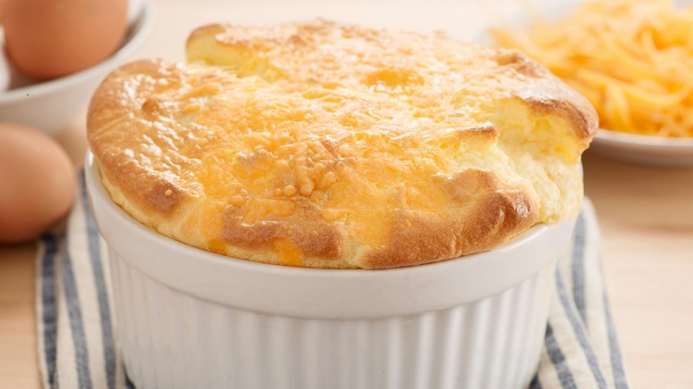

Deathclaw Wellingham

Deathclaw Egg, a la Wellingham is the perfect addition to a decadent bunker dinner or a tasty brunch! Its crispy outside and soft fluffy insides will have Raiders knocking down your door for a taste. This mouthwatering souffle is an original recipe by Wellingham (of The Diamond City Wellinghams.)
Ingredients
- 1 tato, peeled, diced, sauteed
- 1 Deathclaw egg, beaten
- 1 vessel water, unpurified (for flavor)
Steps
- Preheat your cooking station to 375 F
- Combine diced tato and beaten egg in the preheated skillet
- Stir ingredients while adding unpurified water
- Cover skillet 20-25 minutes until mixture is puffed and lightly browned